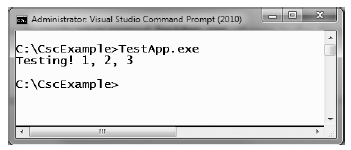
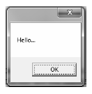

While it is true that you may never decide to build a large-scale application using nothing but the C# command-line compiler, it is important to understand the basics of how to compile your code files by hand. I can think of a few reasons you should get a grip on the process.
The most obvious reason is the simple fact that you might not have a copy of Visual Studio 2010 or another graphical IDE.
You may be in a university setting where you are prohibited from using code generation tools/IDEs in the classroom.
You plan to make use of automated build tools, such as msbuild.exe which require you to know the command-line options of the tools you are utilizing.
You want to deepen your understanding of C#. When you use graphical IDEs to build applications, you are ultimately instructing csc.exe how to manipulate your C# input files. In this light, it's edifying to see what takes place behind the scenes.
Another nice by-product of working with csc.exe in the raw is that you become that much more comfortable manipulating other command-line tools included with the .NET Framework 4.0 SDK. A number of important utilities are accessible only from the command line.
To illustrate how to build a .NET application IDE-free, we will build a simple executable assembly named TestApp.exe using the C# command-line compiler and Notepad. First, you need some source code. Open Notepad (using the Start ? All Programs ? Accessories menu option) and enter the following trivial C# class definition:
// A simple C# application. using System; class TestApp { static void Main() { Console.WriteLine("Testing! 1, 2, 3"); } }
Once you have finished, save the file in a convenient location (e.g., C:\CscExample) as TestApp.cs. Now let's get to know the core options of the C# compiler.
Note As a convention, all C# code files take a *.cs file extension. The name of the file does not need to have any mapping to the name of the type (or types) it is defining.
The first point of interest is to understand how to specify the name and type of assembly to create (e.g., a console application named MyShell.exe, a code library named MathLib.dll, a Windows Presentation Foundation application named Halo8.exe). Each possibility is represented by a specific flag passed into csc.exe as a command-line parameter (see Table 2-1).
Table 2-1. Output Options of the C# Compiler
| Option | Meaning in Life |
|---|---|
| /out | This option is used to specify the name of the assembly to be created. By default, the assembly name is the same as the name of the initial input *.cs file. |
| /target:exe | This option builds an executable console application. This is the default assembly output type, and thus may be omitted when building this type of application. |
| /target:library | This option builds a single-file *.dll assembly. |
| /target:module | This option builds a module. Modules are elements of multi-file assemblies (fully described in Chapter 14). |
| /target:winexe | Although you are free to build graphical user interface-based applications using the /target:exe option, /target:winexe prevents a console window from appearing in the background. |
Note The options sent to the command-line compiler (as well as most other command-line tools) can be prefixed with either a dash (-) or a slash (/).
To compile TestApp.cs into a console application named TestApp.exe, change to the directory containing your source code file
cd C:\CscExample
and enter the following command set (note that command-line flags must come before the name of the input files, not after):
csc /target:exe TestApp.cs
Here I did not explicitly specify an /out flag; therefore, the executable will be named TestApp.exe given that TestApp is the name of the input file. Also be aware that most of the C# compiler flags support an abbreviated version, such as /t rather than /target (you can view all abbreviations by entering csc -? at the command prompt).
csc /t:exe TestApp.cs
Furthermore, given that the /t:exe flag is the default output used by the C# compiler, you could also compile TestApp.cs simply by typing the following: csc TestApp.cs
TestApp.exe can now be run from the command line by typing the name of the executable, as shown in Figure 2-2.
Figure 2-2. TestApp.exe in action
Next, let's examine how to compile an application that makes use of types defined in a separate .NET assembly. And just in case you are wondering how the C# compiler understood your reference to the System.Console type, recall from Chapter 1 that mscorlib.dll is automatically referenced during the compilation process (if for some strange reason you wish to disable this feature, you may specify the /nostdlib option of csc.exe).
Let's update the TestApp application to display a Windows Forms message box. Open your TestApp.cs file and modify it as follows:
using System; // Add this! using System.Windows.Forms; class TestApp { static void Main() { Console.WriteLine("Testing! 1, 2, 3"); // Add this! MessageBox.Show("Hello..."); } }
Notice you are importing the System.Windows.Forms namespace via the C# using keyword (introduced in Chapter 1). Recall that when you explicitly list the namespaces used within a given *.cs file, you avoid the need to make use of fully qualified names of a type (which can lead to hand cramps).
At the command line, you must inform csc.exe which assembly contains the namespaces you are using. Given that you have made use of the System.Windows.Forms.MessageBox class, you must specify the System.Windows.Forms.dll assembly using the /reference flag (which can be abbreviated to /r).
csc /r:System.Windows.Forms.dll TestApp.cs
If you now rerun your application, you should see a message box appear (see Figure 2-3) in addition to the console output.
Figure 2-3. Your first Windows Forms application
On a related note, what if you need to reference numerous external assemblies using csc.exe? Simply list each assembly using a semicolon-delimited list. You don't need to specify multiple external assemblies for the current example, but some sample usage follows:
csc /r:System.Windows.Forms.dll;System.Drawing.dll *.cs
Note As explained a bit later in this chapter, the C# compiler will automatically reference a set of core .NET assemblies (such as System.Windows.Forms.dll) even if they are not specified using the /r flag.
The current incarnation of the TestApp.exe application was created using a single *.cs source code file. While it is perfectly permissible to have all of your .NET types defined in a single *.cs file, most projects are composed of multiple *.cs files to keep your code base a bit more flexible. Assume you have authored a new class contained in a new file named HelloMsg.cs.
// The HelloMessage class using System; using System.Windows.Forms; class HelloMessage { public void Speak() { MessageBox.Show("Hello..."); } }
Now, update your initial TestApp class to make use of this new class type and comment out the previous Windows Forms logic.
using System; // Don't need this anymore. // using System.Windows.Forms; class TestApp { static void Main() { Console.WriteLine("Testing! 1, 2, 3"); // Don't need this anymore either. // MessageBox.Show("Hello..."); // Use the HelloMessage class! HelloMessage h = new HelloMessage(); h.Speak(); } }
You can compile your C# files by listing each input file explicitly.
csc /r:System.Windows.Forms.dll TestApp.cs HelloMsg.cs
As an alternative, the C# compiler allows you to make use of the wildcard character (*) to inform csc.exe to include all *.cs files contained in the project directory as part of the current build.
csc /r:System.Windows.Forms.dll *.cs
When you run the program again, the output is identical to the previous compiled code. The only difference between the two applications is the fact that the current logic has been split among multiple files.
As you might guess, if you were to build a complex C# application at the command prompt, you would have to specify a tedious number of input options to inform the compiler how to process your source code. To help lessen your typing burden, the C# compiler honors the use of response files.
C# response files contain all the instructions to be used during the compilation of your current build. By convention, these files end in a *.rsp (response) extension. Assume that you have created a response file named TestApp.rsp that contains the following options (as you can see, comments are denoted with the # character):
# This is the response file
# for the TestApp.exe example
# of Chapter 2.
# External assembly references.
/r:System.Windows.Forms.dll
# output and files to compile (using wildcard syntax).
/target:exe /out:TestApp.exe *.cs
Now, assuming this file is saved in the same directory as the C# source code files to be compiled, you are able to build your entire application as follows (note the use of the @ symbol):
csc @TestApp.rsp
If the need should arise, you can also specify multiple *.rsp files as input (e.g., csc @FirstFile.rsp @SecondFile.rsp @ThirdFile.rsp). If you take this approach, be aware that the compiler processes the command options as they are encountered. Therefore, command-line arguments in a later *.rsp file can override options in a previous response file.
Also note that flags listed explicitly on the command line before a response file will be overridden by the specified *.rsp file. Thus, if you were to enter the following:
csc /out:MyCoolApp.exe @TestApp.rsp
the name of the assembly would still be TestApp.exe (rather than MyCoolApp.exe), given the /out:TestApp.exe flag listed in the TestApp.rsp response file. However, if you list flags after a response file, the flag will override settings in the response file.
Note The effect of the /reference flag is cumulative. Regardless of where you specify external assemblies (before, after, or within a response file), the end result is a summation of each reference assembly.
The final point to be made regarding response files is that the C# compiler has an associated default response file (csc.rsp), which is located in the same directory as csc.exe itself (which is by default installed under C:\Windows\Microsoft.NET\Framework\<version>, where <version> is a given version of the platform). If you were to open this file using Notepad, you will find that numerous .NET assemblies have already been specified using the /r: flag, including various libraries for web development, LINQ programming, data access, and other core libraries (beyond mscorlib.dll).
When you are building your C# programs using csc.exe, this response file will be automatically referenced, even when you supply a custom *.rsp file. Given the presence of the default response file, the current TestApp.exe application could be successfully compiled using the following command set (as System.Windows.Forms.dll is referenced within csc.rsp):
csc /out:TestApp.exe *.cs
In the event that you wish to disable the automatic reading of csc.rsp, you can specify the /noconfig option.
csc @TestApp.rsp /noconfig
Note If you reference assemblies (via the /r option) that you do not actually make use of, they are ignored by the compiler. Therefore, you have no need to worry about 'code bloat.'
Obviously, the C# command-line compiler has many other options that can be used to control how the resulting .NET assembly is to be generated. You'll see other important features where necessary over the course of this text, however full details of these options can be found within the .NET Framework 4.0 SDK documentation.
Source Code The CscExample application can be found under the Chapter 2 subdirectory.